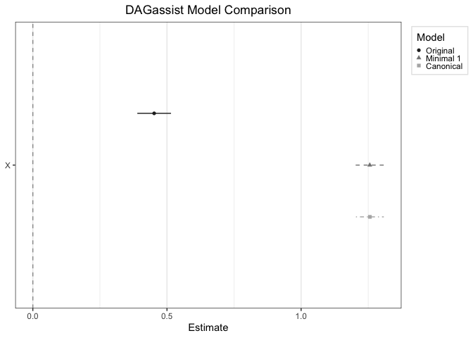

An all-in-one DAG-driven robustness check. Generate publication-quality reports that classify variables by causal role, compare the significance of DAG-derived models, and explicitly target estimands.
What DAGassist does:
- Classifies covariates by causal role (confounder, mediator, collider, descendants, neutral controls, etc.).
- Automates the reestimation of models using DAG-derived adjustment sets.
- Targets explicit estimands to facilitate transparent comparison between models.
- Produces publication-grade reports in multiple formats (LaTeX/Word/Excel/markdown/plain text + dotwhisker).
- Provides weight diagnostics to evaluate positivity and effective sample sizes.
See the Quick Tour vignette for a 10 minute start-to-finish guide on how to use DAGassist to identify causal roles, create reports, and interpret the results.
See the Making Reports vignette for details on producing publication-quality DAGassist reports in LaTex, Word, Excel, and plain text. See the Parameter Guide vignette for examples of how to get the most out of DAGassist.
See the Supported Models vignette for documentation on what engines DAGassist supports.
See the Ecosystem Guide for how DAGassist fits in the R DAG ecosystem—and a diagram of the packages it integrates with.
Installation
You can install DAGassist with:
install.packages("DAGassist")
library(DAGassist) Or you can install the development version from GitHub with:
# install.packages("devtools")
devtools::install_github("grahamgoff/DAGassist")Example
Simply provide a dagitty() object and a regression call and DAGassist will create a report classifying variables by causal role, and compare the specified regression to minimal and canonical models.
DAGassist::DAGassist(dag = dag_model,
formula = feols(Y ~ X + M + C + Z + A + B, data = df))
#> DAGassist Report:
#>
#> Roles:
#> variable role Exp. Out. conf med col dOut dMed dCol dConfOn dConfOff NCT NCO
#> X exposure x
#> Y outcome x
#> Z confounder x
#> M mediator x
#> C collider x x x
#> A nco x
#> B nco x
#>
#> (!) Bad controls in your formula: {M, C}
#> Minimal controls 1: {Z}
#> Canonical controls: {A, B, Z}
#>
#> Formulas:
#> original: Y ~ X + M + C + Z + A + B
#>
#> Model comparison:
#>
#> +----------+-----------+-----------+-----------+
#> | | Original | Minimal 1 | Canonical |
#> +==========+===========+===========+===========+
#> | X | 0.452*** | 1.256*** | 1.256*** |
#> +----------+-----------+-----------+-----------+
#> | | (0.032) | (0.027) | (0.026) |
#> +----------+-----------+-----------+-----------+
#> | M | 0.514*** | | |
#> +----------+-----------+-----------+-----------+
#> | | (0.021) | | |
#> +----------+-----------+-----------+-----------+
#> | C | 0.343*** | | |
#> +----------+-----------+-----------+-----------+
#> | | (0.019) | | |
#> +----------+-----------+-----------+-----------+
#> | Z | 0.249*** | 0.311*** | 0.309*** |
#> +----------+-----------+-----------+-----------+
#> | | (0.027) | (0.034) | (0.033) |
#> +----------+-----------+-----------+-----------+
#> | A | 0.152*** | | 0.187*** |
#> +----------+-----------+-----------+-----------+
#> | | (0.021) | | (0.026) |
#> +----------+-----------+-----------+-----------+
#> | B | -0.069*** | | -0.057* |
#> +----------+-----------+-----------+-----------+
#> | | (0.021) | | (0.026) |
#> +----------+-----------+-----------+-----------+
#> | Num.Obs. | 2000 | 2000 | 2000 |
#> +----------+-----------+-----------+-----------+
#> | R2 | 0.818 | 0.706 | 0.714 |
#> +==========+===========+===========+===========+
#> | + p < 0.1, * p < 0.05, ** p < 0.01, *** p < |
#> | 0.001 |
#> +==========+===========+===========+===========+
#>
#> Roles legend: Exp. = exposure; Out. = outcome; CON = confounder; MED = mediator; COL = collider; dOut = descendant of outcome; dMed = descendant of mediator; dCol = descendant of collider; dConfOn = descendant of a confounder on a back-door path; dConfOff = descendant of a confounder off a back-door path; NCT = neutral control on treatment; NCO = neutral control on outcome
# note: this example uses a test DAG and dataset, which was created
# silently for the sake of brevity.Optionally, users can generate visual output via dotwhisker plots:
DAGassist::DAGassist(dag = dag_model,
formula = feols(Y ~ X + M + C + Z + A + B, data = df),
type = "dotwhisker")